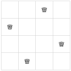

Objectives
-
Understand how to solve integer linear optimization problems using Julia.
JuMP and HiGHS packages of Julia.
JuMP and HiGHS is very similar to non-integer problems. Problem 4.1.3 can be written as
m = Model(HiGHS.Optimizer)
@variable(m, x₁ ≥ 0, Int)
@variable(m, x₂ ≥ 0, Int)
@constraint(m, 17x₁ + 32x₂ ≤ 136)
@constraint(m, 4x₁ + 4x₂ ≤ 25)
@objective(m, Max, 4x₁ + 5x₂)
print(m)
Int to the end indicating that the variables are integers. This returns
Max 4 x₁ + 5 x₂ Subject to 17 x₁ + 32 x₂ ≤ 136 4 x₁ + 4 x₂ ≤ 25 x₁ ≥ 0 x₂ ≥ 0 x₁ integer x₂ integer
set_silent(m)
optimize!(m)
is_solved_and_feasible(m)
true so we have an optimal feasible solution. Then finally, we can find the values and the objective with
value(x₁), value(x₂)
(4.0, 2.0)
objective_value(m)
24.0.
JuMP and HiGHS packages in Julia. You can use the code above as a template.
m2 = Model(HiGHS.Optimizer)
n = 4
@variable(m2, x[1:n,1:n], Bin)
@variable macro shows the variable is binary. Also, note that this make a array variable that will match the size of the board.
mapslices command. Consider mapslices(sum, x, dims = [1]), which returns:
1×4 Matrix{AffExpr}:
x[1,1] + x[2,1] + x[3,1] + x[4,1] … x[1,4] + x[2,4] + x[3,4] + x[4,4]
@constraint(m2, c1, mapslices(sum, x, dims = [1]) .<= ones(1,n))
@constraint(m2, c2, mapslices(sum, x, dims = [2]) .<= ones(n,1))
dims = [2]).
diagm function, which produce a diagonal matrix. Consider diagm(1 => ones(3)) which returns
4×4 Matrix{Float64}:
0.0 1.0 0.0 0.0
0.0 0.0 1.0 0.0
0.0 0.0 0.0 1.0
0.0 0.0 0.0 0.0
diagm function uses the argument of the form i = > v, where i is an integer that shows how far from the main diagonal the vector v should exist. If the integer is positive, then the diagonal will be on the upper right part of the matrix and negative values on the lower left. If we multiply this by x with diagm(1 => ones(3)).*x, the result is
4×4 Matrix{AffExpr}:
0 x[1,2] 0 0
0 0 x[2,3] 0
0 0 0 x[3,4]
0 0 0 0
sum(diagm(1 => ones(3)).*x) returnsP = Matrix(I,n,n)[n:-1:1, :]
@constraint(m2, c3, [sum(diagm(i= > ones(n-abs(i))).*x) for i=-(n-2):(n-2)] .<= ones(2n-3))
@constraint(m2, c4, [sum(P*diagm(i= > ones(n-abs(i))).*x) for i=-(n-2):(n-2)] .<= ones(2n-3))
[. for i= -(n-2):(n-2)] is called a comprehension and builds a vector. See Section 5.2 for more examples.
@objective(m2, Max, sum(x[:,:]))
x. If we put all of these commands in the same cell, then
m2 = Model(HiGHS.Optimizer)
n = 4
P = [ i+j == n+1 ? 1 : 0 for i=1:n, j=1:n]
@variable(m2, x[1:n,1:n], Bin)
@constraint(m2, c1, mapslices(sum, x, dims = [1]) .<= ones(1,n))
@constraint(m2, c2, mapslices(sum, x, dims = [2]) .<= ones(n,1))
@constraint(m2, c3, [sum(diagm(i=>ones(n-abs(i))).*x) for i=-(n-2):(n-2)] .<= ones(2n-3))
@constraint(m2, c4, [sum(P*diagm(i=>ones(n-abs(i))).*x) for i=-(n-2):(n-2)] .<= ones(2n-3))
@objective(m2, Max, sum([x[i,j] for i=1:n, j=1:n]))
print(m2) which will print out the LOP as
Max x[1,1] + x[2,1] + x[3,1] + x[4,1] + x[1,2] + x[2,2] + x[3,2] + x[4,2] + x[1,3] + x[2,3] + x[3,3] + x[4,3] + x[1,4] + x[2,4] + x[3,4] + x[4,4]
Subject to
x[1,1] + x[2,1] + x[3,1] + x[4,1] ≤ 1
x[1,2] + x[2,2] + x[3,2] + x[4,2] ≤ 1
x[1,3] + x[2,3] + x[3,3] + x[4,3] ≤ 1
x[1,4] + x[2,4] + x[3,4] + x[4,4] ≤ 1
x[1,1] + x[1,2] + x[1,3] + x[1,4] ≤ 1
x[2,1] + x[2,2] + x[2,3] + x[2,4] ≤ 1
x[3,1] + x[3,2] + x[3,3] + x[3,4] ≤ 1
x[4,1] + x[4,2] + x[4,3] + x[4,4] ≤ 1
x[1,1] + x[2,2] + x[3,3] + x[4,4] ≤ 1
x[1,2] + x[2,3] + x[3,4] ≤ 1
x[1,3] + x[2,4] ≤ 1
x[2,1] + x[3,2] + x[4,3] ≤ 1
x[3,1] + x[4,2] ≤ 1
x[4,1] + x[3,2] + x[2,3] + x[1,4] ≤ 1
x[3,1] + x[2,2] + x[1,3] ≤ 1
x[2,1] + x[1,2] ≤ 1
x[4,2] + x[3,3] + x[2,4] ≤ 1
x[4,3] + x[3,4] ≤ 1
x[1,1] binary
x[2,1] binary
x[3,1] binary
x[4,1] binary
x[1,2] binary
x[2,2] binary
x[3,2] binary
x[4,2] binary
x[1,3] binary
x[2,3] binary
x[3,3] binary
x[4,3] binary
x[1,4] binary
x[2,4] binary
x[3,4] binary
x[4,4] binary
x values along each row, column and diagonal), that all of the constraints are there.
set_silent(m2)
optimize!(m2)
is_solved_and_feasible(m2)
true is returned that we have a feasible optimal solution. We can use the following shortcut (called broadcasting) to output the values with
value.(x)
. does broadcasting, that is, the function value is applied to all elements of x term by term. This returns
4×4 Matrix{Float64}:
-0.0 -0.0 1.0 0.0
1.0 0.0 0.0 -0.0
0.0 -0.0 -0.0 1.0
0.0 1.0 0.0 -0.0
round.(Int, value.(x)) which returns
4×4 Matrix{Int64}:
0 0 1 0
1 0 0 0
0 0 0 1
0 1 0 0

q3 = Model(HiGHS.Optimizer)
@variable(q3, x[1:3,1:3], Bin)
for j=1:3
@constraint(q3, sum(x[:,j]) ≤ 1)
end
for i=1:3
@constraint(q3, sum(x[i,:]) ≤ 1)
end
@constraint(q3, sum( x[i,i] for i=1:3) ≤ 1)
@constraint(q3, sum( x[i,4-i] for i=1:3) ≤ 1)
@constraint(q3, sum( x[1,2]+x[2,1]) ≤ 1)
@constraint(q3, sum( x[3,2]+x[2,3]) ≤ 1)
@constraint(q3, sum( x[1,2]+x[2,3]) ≤ 1)
@constraint(q3, sum( x[3,2]+x[2,1]) ≤ 1)
@objective(q3, Max, sum(x[:,:]))
print(q3)
Max x[1,1] + x[2,1] + x[3,1] + x[1,2] + x[2,2] + x[3,2] + x[1,3] + x[2,3] + x[3,3] Subject to x[1,1] + x[2,1] + x[3,1] ≤ 1 x[1,2] + x[2,2] + x[3,2] ≤ 1 x[1,3] + x[2,3] + x[3,3] ≤ 1 x[1,1] + x[1,2] + x[1,3] ≤ 1 x[2,1] + x[2,2] + x[2,3] ≤ 1 x[3,1] + x[3,2] + x[3,3] ≤ 1 x[1,1] + x[2,2] + x[3,3] ≤ 1 x[3,1] + x[2,2] + x[1,3] ≤ 1 x[2,1] + x[1,2] ≤ 1 x[3,2] + x[2,3] ≤ 1 x[1,2] + x[2,3] ≤ 1 x[2,1] + x[3,2] ≤ 1 x[1,1] binary x[2,1] binary x[3,1] binary x[1,2] binary x[2,2] binary x[3,2] binary x[1,3] binary x[2,3] binary x[3,3] binary
set_silent(q3)
optimize!(q3)
is_solved_and_feasible(q3)
true is returned. You might think that this won’t have a solution, however, it seems to and if we print out the solution with
round.(Int, value.(x))
3×3 Matrix{Int64}:
0 0 0
1 0 0
0 0 1